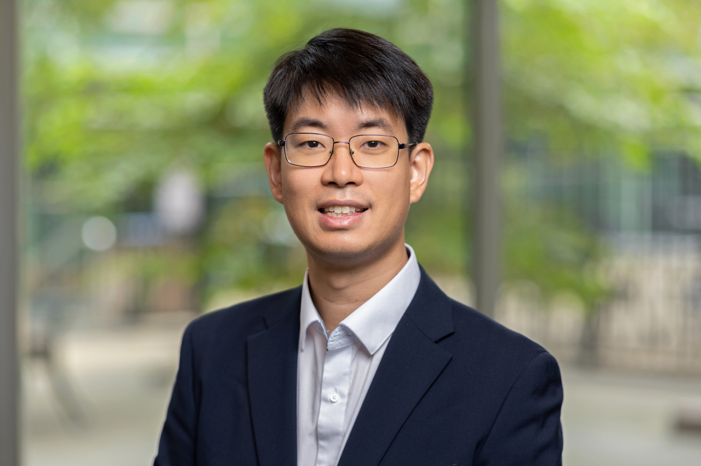

David Joon Ho, Ph.D.
Assistant Professor
Department of Cancer AI & Digital Health
Graduate School of Cancer Science and Policy
National Cancer Center
323 Ilsan-ro, Ilsandong-gu, Goyang-si, Gyeonggi-do, Republic of Korea
+82-31-920-2755
hod<at>ncc.re.kr
Dr. David Joon Ho is Assistant Professor at Department of Cancer AI & Digital Health, Graduate School of Cancer Science and Policy, National Cancer Center in Korea. He received his B.S. and M.S. degrees from University of Illinois at Urbana-Champaign and his Ph.D. degree from Purdue University, all in Electrical and Computer Engineering. After completing his PhD study, he joined Memorial Sloan Kettering Cancer Center and led multiple AI projects collaborating with pathologists. His research interests include digital/computational pathology, computer vision, and artificial intelligence/machine learning. More specifically, he actively works on multi-class tissue segmentation of hematoxylin and eosin (H&E)-stained histopathology whole slide images from various cancer types to objectively quantify the images and to predict survival outcome and treatment response.
[Google Scholar] [LinkedIn] [Twitter]
Ho Lab website is launched! Please visit here.
Education
Professional Experiences
National Cancer Center, Goyang-si, Gyeonggi-do, Republic of Korea
Assistant Professor (August 2023 - Present)
Memorial Sloan Kettering Cancer Center, New York, NY
Instructor (October 2022 - June 2023)
Machine Learning Scientist (January 2019 - October 2022)
Purdue University, West Lafayette, IN
Graduate Research Assistant (June 2014 - December 2018)
HP Labs, Palo Alto, CA
Summer Intern (May 2017 - August 2017)
United States Patent and Trademark Office, Alexandria, VA
Patent Examiner (July 2012 - August 2013)
University of Illinois at Urbana-Champaign, Urbana-Champaign, IL
Graduate Research Assistant (January 2011 - May 2012)
Undergraduate Research Assistant (May 2009 - May 2010)
Teaching Experiences
National Cancer Center, Goyang-si, Gyeonggi-do, Republic of Korea
Assistant Professor (August 2023 - Present)
-
Mathematics for Data Science
Purdue University, West Lafayette, IN
Graduate Lecturer (June 2018 - August 2018)
-
Linear Circuit Analysis II
Graduate Teaching Assistant (August 2014 - May 2018)
-
Linear Circuit Analysis II
University of Illinois at Urbana-Champaign, Urbana-Champaign, IL
Undergraduate Teaching Assistant (January 2008 - December 2009)
Publications
Journal Papers
[J7] K. Kim, K. Lee, S. Cho, D.U. Kang, S. Park, Y. Kang, H. Kim, G. Choe, K.C. Moon, K.S. Lee, J.H. Park, C. Hong, R. Nateghi, F. Pourakpour, X. Wang, S. Yang, S.A.F. Jahromi, A. Khani, H.-R. Kim, D.-H. Choi, C.H. Han, J.T. Kwak, F. Zhang, B. Han, D.J. Ho, G.H. Kang, S.Y. Chun, W.-K. Jeong, P. Park, J. Choi, "PAIP 2020: Microsatellite instability prediction in colorectal cancer," Medical Image Analysis, Vol. 89, 102886, October 2023. [DOI]
[J6] D.J. Ho*, N.P. Agaram*, M.-H. Jean, S.D. Suser, C. Chu, C.M. Vanderbilt, P.A. Meyers, L.H. Wexler, J.H. Healey, T.J. Fuchs, M.R. Hameed, "Deep Learning-Based Objective and Reproducible Osteosarcoma Chemotherapy Response Assessment and Outcome Prediction," The American Journal of Pathology, Vol. 193, No. 3, pp. 341-349, March 2023. [DOI] [Code]
[J5] D.J. Ho, M.H. Chui, C.M. Vanderbilt, J. Jung, M.E. Robson, C.-S. Park, J. Roh, T.J. Fuchs, "Deep Interactive Learning-based ovarian cancer segmentation of H&E-stained whole slide images to study morphological patterns of BRCA mutation," Journal of Pathology Informatics, Vol. 14, 100160, 2023. [DOI] [Code]
[J4] T.M. D'Alfonso, D.J. Ho, M.G. Hanna, A. Grabenstetter, D.V.K. Yarlagadda, L. Geneslaw, P. Ntiamoah, T.J. Fuchs, and L.K. Tan, "Multi-magnification-based machine learning as an ancillary tool for the pathologic assessment of shaved margins for breast carcinoma lumpectomy specimens," Modern Pathology, Vol. 34, pp. 1487–1494, August 2021. [DOI] [ModPath Chat]
[J3] D.J. Ho, D.V.K. Yarlagadda, T.M. D'Alfonso, M.G. Hanna, A. Grabenstetter, P. Ntiamoah, E. Brogi, L.K. Tan, and T.J. Fuchs, "Deep Multi-Magnification Networks for multi-class breast cancer image segmentation," Computerized Medical Imaging and Graphics, Vol. 88, 101866, March 2021. [DOI] [Code]
[J2] D.J. Ho, D. Mas Montserrat, C. Fu, P. Salama, K.W. Dunn, and E.J. Delp, "Sphere estimation network: three-dimensional nuclei detection of fluorescence microscopy images," Journal of Medical Imaging, Vol. 7, No. 4, 044003, August 2020. [DOI]
[J1] K.W. Dunn, C. Fu, D.J. Ho, S. Lee, S. Han, P. Salama, and E.J. Delp, "DeepSynth: Three-dimensional nuclear segmentation of biological images using neural networks trained with synthetic data," Scientific Reports, Vol. 9, 18295, December 2019. [DOI]
Conference Papers
[C8] D.J. Ho*, N.P. Agaram*, P.J. Schueffler, C.M. Vanderbilt, M.-H. Jean, M.R. Hameed, and T.J. Fuchs, "Deep Interactive Learning: An Efficient Labeling Approach for Deep Learning-Based Osteosarcoma Treatment Response Assessment," Proceedings of the International Conference on Medical Image Computing and Computer-Assisted Intervention, pp. 540-549, October 2020, Virtual. [DOI]
[C7] D.J. Ho, S. Han, C. Fu, P. Salama, K.W. Dunn, and E.J. Delp, "Center-extraction-based three dimensional nuclei instance segmentation of fluorescence microscopy images," Proceedings of the IEEE-EMBS International Conference on Biomedical and Health Informatics, pp. 1-4, May 2019, Chicago, IL. [DOI]
[C6] C. Fu, S. Lee, D.J. Ho, S. Han, P. Salama, K.W. Dunn, and E.J. Delp, "Three dimensional fluorescence microscopy image synthesis and segmentation," Proceedings of the Computer Vision for Microscopy Image Analysis workshop at Computer Vision and Pattern Recognition, pp. 2334-2342, June 2018, Salt Lake City, UT. [DOI]
[C5] D.J. Ho, C. Fu, P. Salama, K.W. Dunn, and E.J. Delp, "Nuclei detection and segmentation of fluorescence microscopy images using three dimensional convolutional neural networks," Proceedings of the IEEE International Symposium on Biomedical Imaging, pp. 418-422, April 2018, Washington D.C. [DOI]
[C4] D.J. Ho and Q. Lin, "Person segmentation using convolutional neural networks with dilated convolutions," Proceedings of the IS&T International Symposium on Electronic Imaging: Imaging and Multimedia Analytics in a Web and Mobile World, pp 455-1-455-7, January 2018, Burlingame, CA. [DOI]
[C3] D.J. Ho, C. Fu, P. Salama, K.W. Dunn, and E.J. Delp, "Nuclei segmentation of fluorescence microscopy images using three dimensional convolutional neural networks," Proceedings of the Computer Vision for Microscopy Image Analysis workshop at Computer Vision and Pattern Recognition, pp. 834-842, July 2017, Honolulu, HI. [DOI]
[C2] C. Fu, D.J. Ho, S. Han, P. Salama, K.W. Dunn, and E.J. Delp, "Nuclei segmentation of fluorescence microscopy images using convolutional neural networks," Proceedings of the IEEE International Symposium on Biomedical Imaging, pp. 704-708, April 2017, Melbourne, Australia. [DOI]
[C1] D.J. Ho, P. Salama, K.W. Dunn, and E.J. Delp, "Boundary segmentation for fluorescence microscopy using steerable filters," Proceedings of the SPIE Medical Imaging: Image Processing, 101330E, February 2017, Orlando, FL. [DOI]
Correspondences (Letters to the Editor)
[L1] D.J. Ho*, N.P. Agaram*, A.O. Frankel, M. Lathara, D. Catchpoole, C. Keller, and M.R. Hameed, "Toward Deploying a Deep Learning Model for Diagnosis of Rhabdomyosarcoma," Modern Pathology, Vol. 37, No. 3, 100421, March 2024. [DOI]
Patents
[P2] T. Fuchs and D.J. Ho, "Deep interactive learning for image segmentation models," US Patent Number 11,176,677. [Link]
[P1] T. Fuchs and D.J. Ho, "Deep multi-magnification networks for multi-class image segmentation," US Patent Number 11,501,434. [Link]
Updated on February 13, 2024